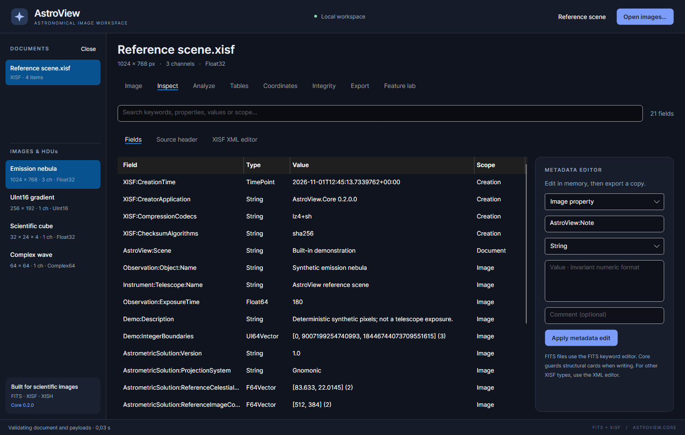

Inspecting and editing metadata
Use Inspect to find file properties, FITS cards and ancillary metadata. The workspace has Fields, Source header and XISF XML editor subtabs.

Find a value
- Select the document and image/HDU in the sidebar.
- Open Inspect → Fields.
- Enter a keyword, property ID, value or scope in the search box.
- Read Field, Type, Value and Scope together.
For example, search for Exposure, OBJECT, Telescope or checksum depending
on the source format. A similarly named document property and image property can
refer to different objects. Selecting another image can change the visible fields.
Some values are formatted summaries of arrays or binary objects. To inspect the structural representation, open Source header. For XISF it displays XML; for FITS it displays the selected header's cards. This view is read-only.
Edit a scalar property
- Select a row to populate the editor, or enter a new property ID.
- Choose Image property, Document property, Creation property or FITS keyword, as appropriate.
- Choose the scalar type and enter the value.
- Optionally enter a comment.
- Click Apply metadata edit and check the resulting field and scope.
- Export a copy to save it.
For an application note, use an identifier such as AstroView:Note and type String. Creation metadata is reserved
for XISF: identifiers; use your own
namespace for application-specific properties. Identifiers in XISF are
case-sensitive, so AstroView:Note and AstroView:note are different properties.
| Type | Example input | Notes |
|---|---|---|
| String | Reviewed before stacking |
Enter plain text, without extra XML quoting |
| Boolean | true |
Use true/false |
| Int64 | -42 |
Signed 64-bit integer |
| UInt64 | 18446744073709551615 |
Exact unsigned integer text |
| Float64 | 180.5 |
Use a decimal point in this free-text editor |
| TimePoint | 2026-11-01T22:15:00+00:00 |
Include an explicit offset for an unambiguous instant |
The free-text metadata editor uses invariant numeric formatting even if numeric
spin controls elsewhere display a decimal comma. Numeric text such as 180,5
can be misinterpreted; use 180.5. XISF vectors, matrices and other advanced
types use the XML editor or the separate table editor.
Edit FITS keywords
For a FITS file, the editor writes a keyword in the selected HDU header (or the primary header when appropriate). For an XISF image, choose FITS keyword to edit its embedded FITS-keyword metadata. Enter String values as ordinary text; the application performs the required FITS quoting.
Avoid editing structural cards such as BITPIX or NAXIS to try to change an
image's dimensions. A header edit does not resize its pixel payload. Core guards
inconsistent structure when writing. The scalar editor is also not a specialized
editor for repeated HISTORY/COMMENT card sequences; inspect those in the source
header and preserve them through a native copy.
Advanced XISF XML editing
- Open XISF XML editor.
- Click Load current XML to start from the currently selected document.
- Make a small, intentional change, retaining the XML namespace and structure.
- Click Apply XML in memory.
- Review fields and run Integrity → Validate document.
- Export a new copy and reopen it to check the result.
Keep original block references valid. Deleting/changing an attachment location, sample format, geometry or compression attribute without changing the associated data can make the document unreadable. Arbitrary source pixels are not edited by typing a different number into a header attribute.
Applying edited XML reparses supported structure; it does not write to the original file. Editing a signed document can invalidate its signature. After intentional content changes, export and sign the resulting copy again if a new signature is required. See integrity.